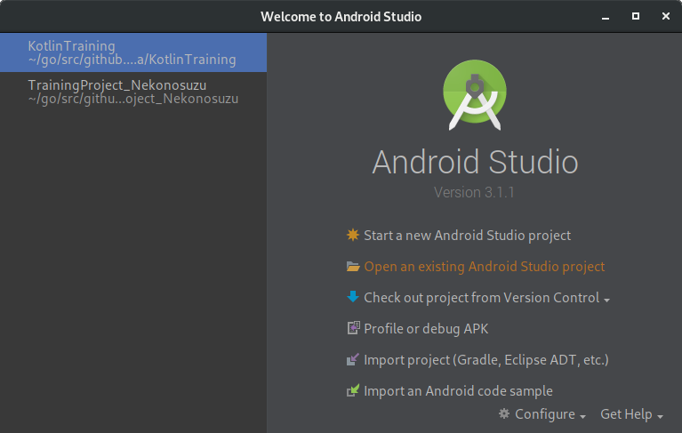
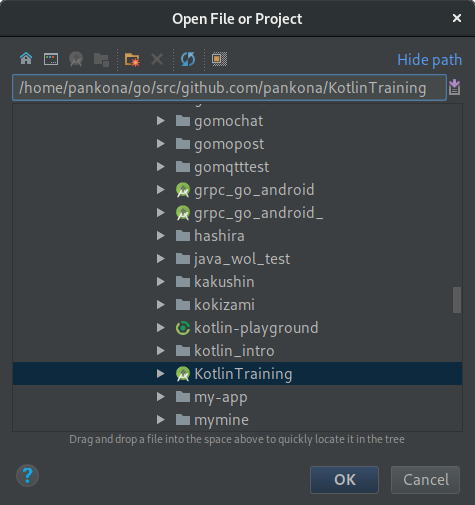

開発環境の構築
Kotlin を用いた開発を行うための環境構築について記載します。
ゴール
- サンプルプロジェクトを各位の GitHub アカウントに fork する
- fork したリポジトリを clone する
- clone したサンプルプロジェクトを Android Studio で読み込む
- SampleTest を実行し、welcome メッセージを確認する
- Sample.kt を編集し、hello world を出す関数を定義する
- hello world を出す関数を SampleTest クラスから呼び出す
- できあがったら GitHub へ push
想定する事前準備
以下はあらかじめ用意されていることを想定
- GitHub のアカウントがあること
- SSH の鍵を GitHub に登録してあること
- https でもいいが、ユーザ名とパスワードを通信のたびに打つことになる
- 何度も GitHub と通信するなら SSH のほうが楽
- Android Studio (バージョン 3 以降) がインストールされている
サンプルプロジェクトを fork する
- 本研修で Kotlin のコードをを書いては捨て書いては捨てするので、
そのためのサンプルプロジェクトを用意しておいた。- サンプルプロジェクトはココ
- Fork して使ってね
- ページ右上の「Fork」ボタンを押す
fork したリポジトリを clone する
- fork したリポジトリのページを開く
- URL は https://github.com/(各位のアカウント名)/KotlinTraining となっているはず
- 「Clone or download」ボタンを押すと「Clone with SSH」となっているはず
- なってない場合は、そばに「Use SSH」というリンクがあるはずなのでそれを押す
- 下部に表示されている URL をコピーする
- git@github.com:(各位のアカウント名)/KotlinTraining.git みたいになっているはず
- ターミナルを開き、任意の位置に clone する
- 以下のようなコマンドを打つ
$ git clone git@github.com:(各位のアカウント名)/KotlinTraining.git
- 正常に完了すると、リポジトリのソースコード一式がダウンロードされる
clone したサンプルプロジェクトを Android Studio で読み込む
- 無事に clone は済んだだろうか
- 次に clone したソースコードを Android Studio で読み込む
- Android Studio を起動し、「Open an exisiting Android Studio project」を選ぶ

↑ Android Studio を開いたところ
- ファイルエクスプローラが起動するので、先程 clone したところを選ぶ

↑ clone したサンプルプロジェクトを選ぶ (アイコンが緑の丸っぽいのを選ぶ)
- 選ぶと自動的にビルドが始まり、必要なもののダウンロード等が始まったりする
SampleTest を実行し、welcome メッセージを確認する
- SampleTest クラスを見つけてみよう
- 見つけたら、右クリックで選択し、
Run 'SampleTest'を選択 - welcome メッセージが出るかな
Sample.kt を編集し、hello world を出す関数を定義する
- Sample.kt を探し、以下のようなコードを書いてみましょう。
fun hello() {
println("Hello World!")
}
hello を SampleTest クラスから呼び出す
- SampleTest を編集し、先ほど Sample.kt に定義した
helloを呼び出してみよう - うまく呼び出せただろうか
GitHub へ push
- 変更したファイルを GitHub の master ブランチへ push しよう
- 以下、git の使い方メモ
# 変更があるファイルを確認する
$ git status
# 変更内容の確認
$ git diff
# ファイルを staging する
$ git add [staging したいファイルを選択]
# commit する (コミットログには変更内容を簡単に書く)
$ git commit -v # -v をつけると commit される内容の確認ができて便利よ！
# master へ push する
$ git push origin master